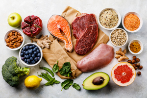

Здоровье внутренних органов, внешний облик, самочувствие и иммунитет напрямую зависят от того, что мы употребляем в пищу. Здоровый образ жизни предполагает исключение ароматизаторов, усилителей вкуса, жирных продуктов, красителей и консервантов, или, как минимум, их сокращение.
Вот основные правила:
-не стоить ни голодать, ни переедать;
-пить чистую воду;
-ешьте меньше сладостей;
-ешьте как минимум 4-5 раз в день небольшими порциями;
-исключите из рационна фастфуд и различные снеки.